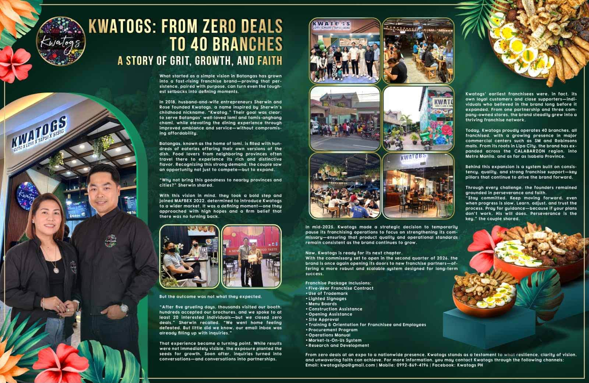

Kwatogs is once again opening its doors to new franchise partners — with a more robust and scalable system designed for long-term success, backed by our new commissary opening in Q2 2026.
Kwatogs' earliest franchisees were its own loyal customers and close supporters — individuals who believed in the brand long before it expanded. From one partnership and three company-owned stores, the brand steadily grew into a thriving franchise network of 40 branches across CALABARZON, Metro Manila, and as far as Isabela Province.
The demand story is simple: lomi and Filipino comfort food are high-frequency, all-day, all-weather, masa-priced categories with strong repeat behavior. Batangas lomi in particular draws customers who travel provinces just to taste it — Kwatogs brings it to them instead.
"After five grueling days at MAFBEX 2022, we closed zero deals. We went home feeling defeated. But little did we know, our email inbox was already filling up with inquiries."
— Sherwin, Co-Founder · Read the full story on Our Story

In mid-2025, Kwatogs made the strategic decision to temporarily pause franchising and focus on strengthening its commissary — ensuring product quality and operational standards remain consistent as the brand grows. With the commissary set to open in the second quarter of 2026, every new branch will be supplied with standardized core ingredients and supported by a system built on consistency, quality, and strong franchise support — the pillars that drive the brand forward.
Everything you need to open and operate your own Kwatogs branch.
Submit the inquiry form below. Our franchise team responds within 2–3 business days.
We get to know you, discuss the package in detail, and evaluate your proposed location.
Sign the five-year franchise contract, then complete training and orientation for you and your team.
With construction and opening assistance from our team, your branch opens — and you become part of the Kwatogs family.
Fill out the form and our franchise team will get in touch. Submitting an inquiry also reserves your copy of the Kwatogs Franchise Kit (PDF).